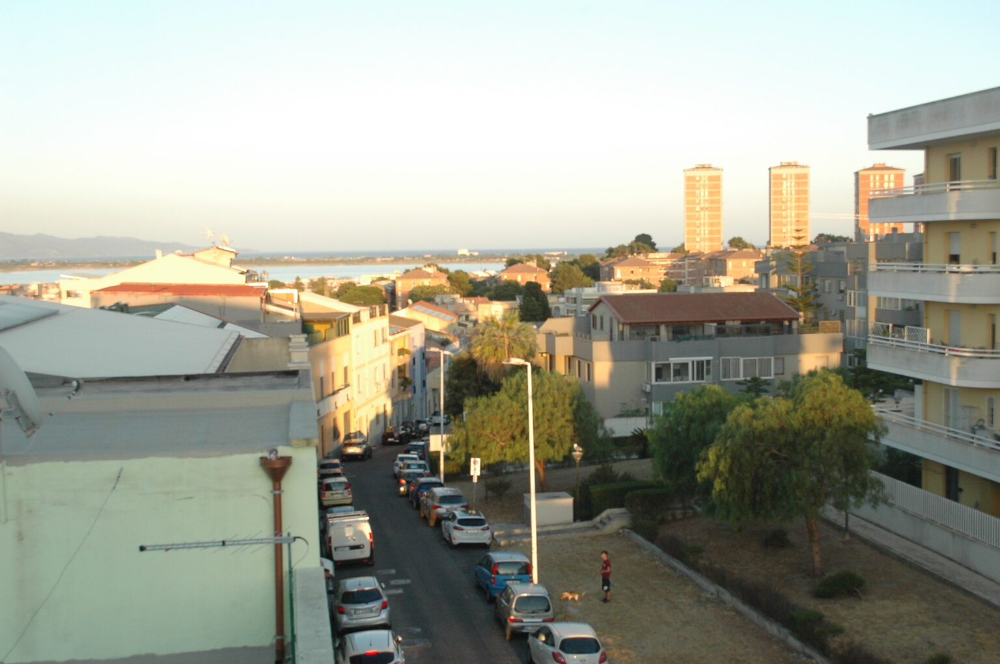
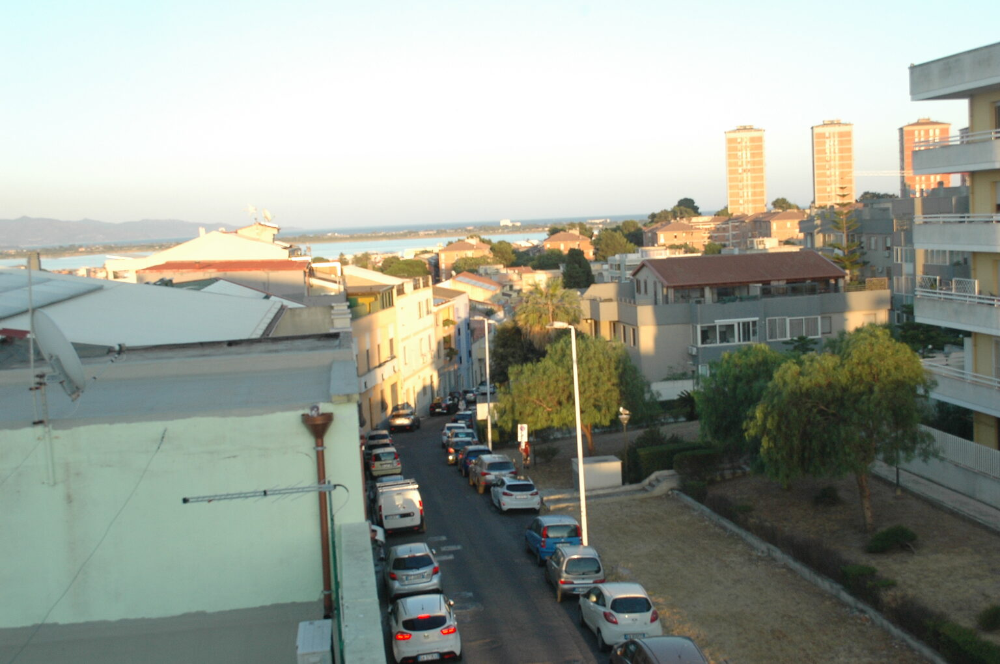

Gut organisierte Anreise
Vor dem Aufenthalt erhältst du klare Wegbeschreibungen und praktische Informationen zur Anreise.
Urlaub in Pirri, Cagliari
Ein heller Rückzugsort in Pirri, mit Blick Richtung Meer und Poetto.
Persönliche Gastfreundschaft und ein privater digitaler Concierge für deinen Aufenthalt in Cagliari.
Das Studio
Ein etwa 33 m² großes Studio in der Via Bellavista 14 in Pirri für maximal 2 Gäste. Doppelbett, Küchenzeile und eigenes Bad bieten alles für einen angenehmen Aufenthalt.
Vom Balkon öffnet sich der Blick Richtung Cagliari und Meer. Das Studio liegt im dritten Stock ohne Aufzug: Bitte berücksichtige die Treppen bei deiner Reiseplanung.
Die Räume
Fotos des Studios und der Aussicht vom Balkon.






Angelo und Viviana
Vor dem Aufenthalt erhältst du klare Wegbeschreibungen und praktische Informationen zur Anreise.
Pirri ist ein praktischer Ausgangspunkt für Cagliari, den Flughafen, die Krankenhäuser und die Küste Südsardiniens.
Bei Fragen oder für lokale Tipps sind wir vor und während des Aufenthalts für dich da.
Concierge
Wir haben praktische Empfehlungen gesammelt und geprüft, damit du Cagliari besser erleben kannst. Der digitale Concierge für Gäste ordnet Strände, Restaurants, Sehenswürdigkeiten, Mobilität und nützliche Informationen.
Die Technik ordnet die Informationen. Wir bleiben deine persönlichen Ansprechpartner.
Zugang ausschließlich für Gäste von Piccolabellavista. Auf Italienisch, Englisch und Deutsch verfügbar.Das Meer in der Nähe
Vom Poetto bis zu den Buchten an der Küste Richtung Villasimius: ein erster Eindruck der Umgebung. Im Concierge findest du unsere Tipps für die Tagesplanung.
Cagliaris langer Stadtstrand für Stunden am Meer und Spaziergänge an der Promenade.
WegbeschreibungEine kleine Bucht zwischen den Landzungen von Cagliari.
WegbeschreibungEine wilde Felsenbucht, zu Fuß über unebenes Gelände erreichbar.
WegbeschreibungDie Küste von Quartu mit weitem Blick auf den Golf von Cagliari.
WegbeschreibungEin langer Strand an der Küste Richtung Villasimius.
WegbeschreibungCagliari
Historische Viertel, Hafenblicke und Natur: Entscheide, wo du beginnen möchtest.
Gassen im historischen Hügelviertel und Terrassen mit Blick über die Stadt.
WegbeschreibungSalinen und Lagunen zwischen Stadt und Meer.
WegbeschreibungDas markante Kap am Golf, zu Fuß mit geeignetem Schuhwerk zu erkunden.
WegbeschreibungGassen nahe dem Hafen, kleine Geschäfte und städtisches Alltagsleben.
WegbeschreibungIm Concierge findest du unsere vollständige Auswahl, exklusiv für Gäste.
Wir haben die wichtigsten Dinge für deinen Aufenthalt zusammengestellt. Öffne die Kartensuche, um aktuelle Standorte, Öffnungszeiten und Wege zu prüfen.
Lage
Pirri ist ein Stadtteil von Cagliari außerhalb der Altstadt. Die Lage ist praktisch für Fahrten zum Flughafen, zu den Krankenhäusern Brotzu, Oncologico und Microcitemico sowie Richtung Villasimius und Südsardinien.
WegbeschreibungCagliaris Zentrum und Poetto: ca. 15–20 Autominuten, je nach Verkehr. Der Flughafen ist mit dem Auto gut erreichbar. Kostenlose Parkmöglichkeiten in der Umgebung, kein reservierter Stellplatz.
„Das Bett war sehr bequem, alles war blitzsauber und der Balkon war hübsch, mit einer fantastischen Aussicht!“
„Sie hat uns einen Aperitif in den Kühlschrank gestellt, war freundlich und ist immer auf unsere Wünsche eingegangen.“
„Tolle Aussicht. Ich wurde herzlich empfangen, höflich und hilfsbereit.“
Auszüge aus verifizierten Bewertungen, die Gäste von Piccolabellavista auf Booking.com hinterlassen haben.
Verifizierte Bewertungen auf Booking.com lesenVerfügbarkeit
Fülle das Formular aus: WhatsApp öffnet sich mit der vorbereiteten Anfrage. Sende sie dort direkt ab.
FAQ
Maximal 2 Gäste, mit Doppelbett.
Das Studio liegt im dritten Stock ohne Aufzug.
Haustiere sind nicht erlaubt.
Kostenlose Parkmöglichkeiten in der Umgebung, je nach Verfügbarkeit; kein reservierter Stellplatz.
Check-in von 15:00 bis 17:00 Uhr, persönlich. Bei Ankunft nach 17:00 Uhr gib uns bitte vorher Bescheid, wir richten uns danach. Check-out bis 11:00 Uhr.
WLAN, mobiles Klimagerät, Fernseher, Küchenzeile, Mikrowelle und Waschmaschine.
Die Anfrage bestätigt den Aufenthalt noch nicht. Verfügbarkeit, Preis, Anzahlung, Stornobedingungen und gegebenenfalls die Kurtaxe erhältst du im Angebot zur Annahme.
Kontakt
Frage uns direkt nach Verfügbarkeit oder Informationen für deinen Aufenthalt.